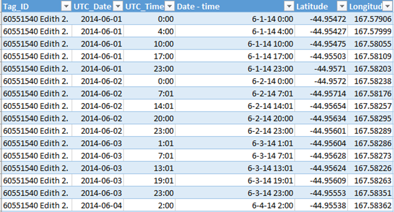
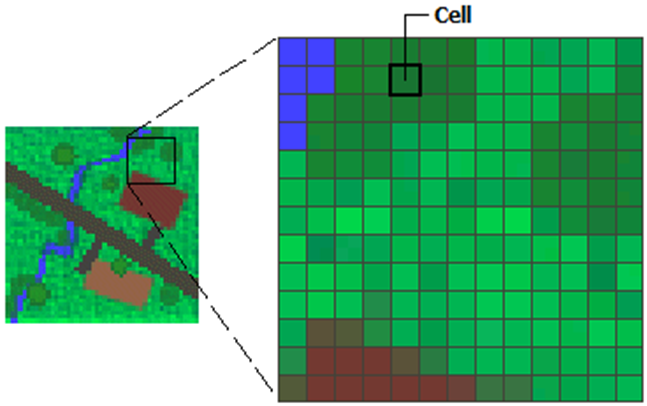
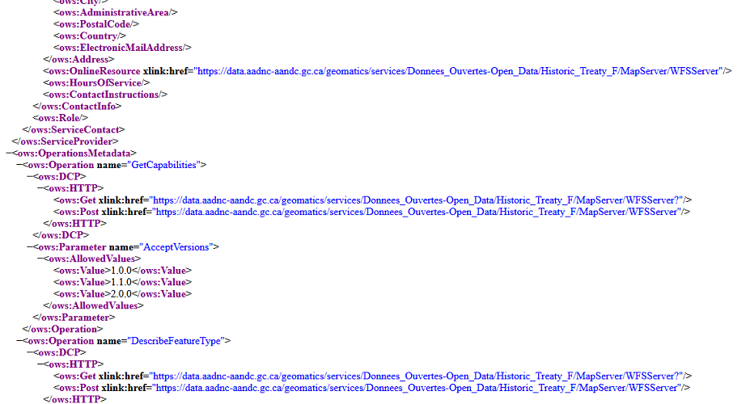
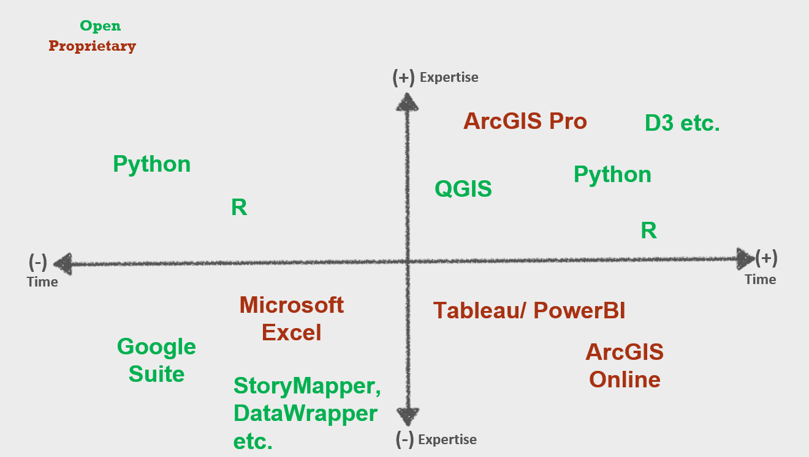

A very spatial session
Meg Miller - GIS & Research Visualization Librarian
Slides: bit.ly/find_data
Outline
- What is GIS?
- Things to consider when working on a mapping project
- Research visualization and Campus Libraries
- Let's make a map! (workshop)
What is GIS?
Geographic Information System
Any system used to analyze, capture or work with information you would display with a map (aka geospatial data).
1. What data types are used in GIS
Data Types: Textual

Usually open formats like .csv, geojson, ascii...)
Data Types: Vector (point, line, polygon)

Each point has an x,y (lat/long) coordinate pair associated with it (.shp, .svg, .dxf...)
Data Types: Raster

A grid made of cells/ pixels(.jpg, .tiff, .grid, .rast, .ecw…)
Data Types: APIs (Application Programming Interface)

A set of rules for how software can exchange data(local or remote, web services are a subset)
2. Then what is 'doing GIS'
Using a program specific example:
"GIS enabled historical consciousness"
Sasha Mullally- UNB History Dept.
3. What is visual encoding (and why should I care)
Mapping data variables to visual cues
In data visualization/ mapping, this means constructing our data to be represented by visual elements like size, colour, length and placement.
Colour- Unconscious perceptions
- Red is bad, green is good;
- Light blue shapes on maps are water;
- Light colours represent less, dark more.
Note:
Be engaged (and beware of 'universal truths').
Thanks to Vanessa Lillie, Cary Miller, Lyle Ford and Elder Valdie Seymour
for their insight in the following section.
Be engaged (1)
- Data visualization theory is a colonial construct;
- Colour has connotation outside of your own world view;
Be engaged (2)
- Who are you focussing on? Who is being erased?
- "Maps have killed more people than guns ever have" Dayrit (2020)
Popular processes:
- Digitization of maps/images
- Reconstruction of features from the past or present
- Georeferencing microdata
- Revealing trends
3. How can Libraries support me
Library Support:
Librarian Support
Subject Guides
Esri (ArcGIS) software access
Training opportunities
Tool Choice

Key Points:
- Your expertise - be kind to your future self (time etc.)
- Purpose - exploratory vs. explanatory
- Audience - expertise, needs, support
- Data requirements - size, residency, privacy...
Hands-on: From there to here – Making a meaningful map without a computer

Questions
meg.miller@umanitoba.ca
workspace: bit.ly/uml_map